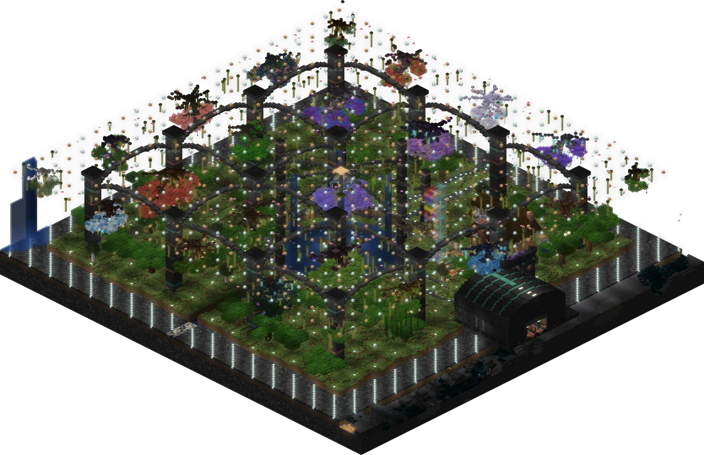
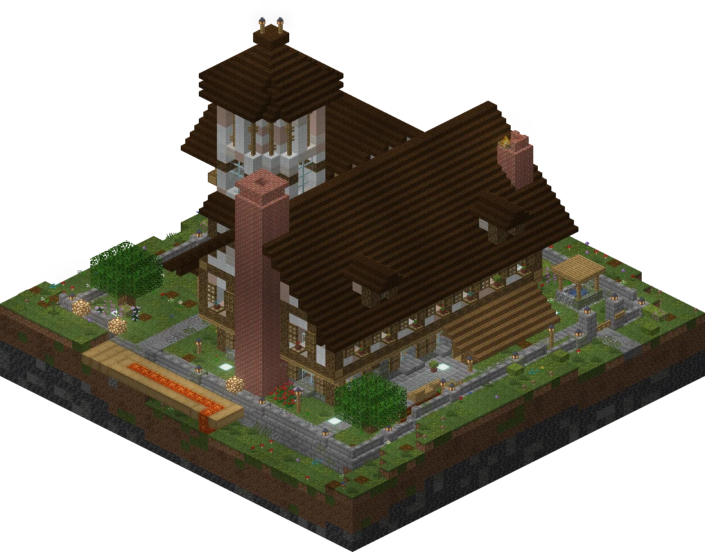
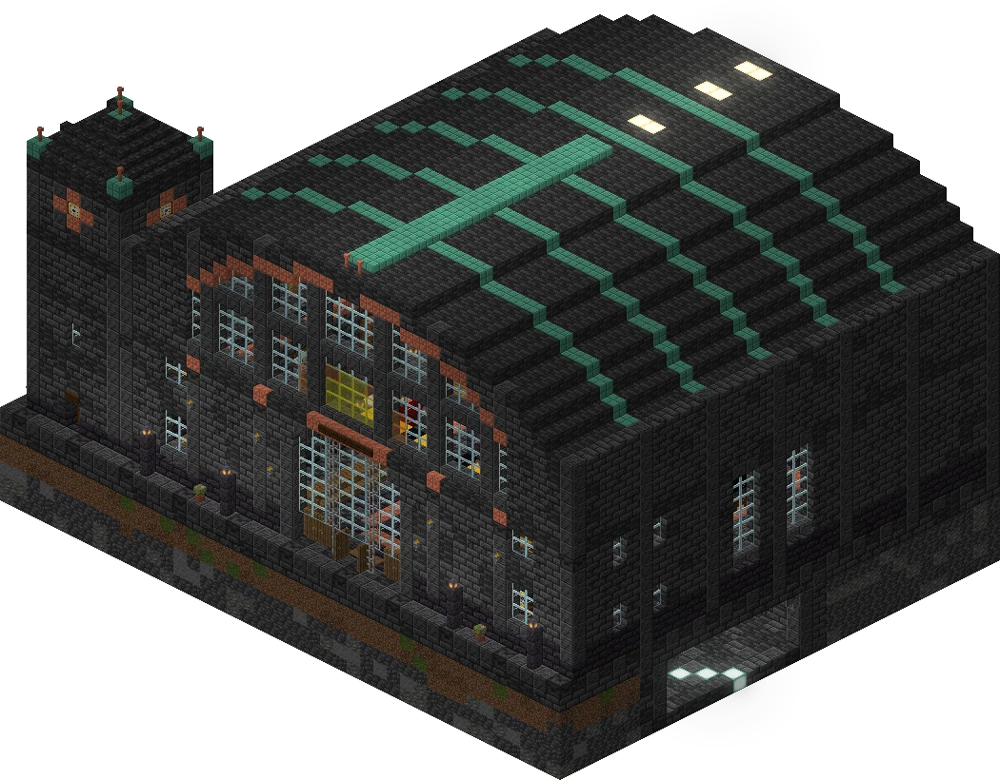
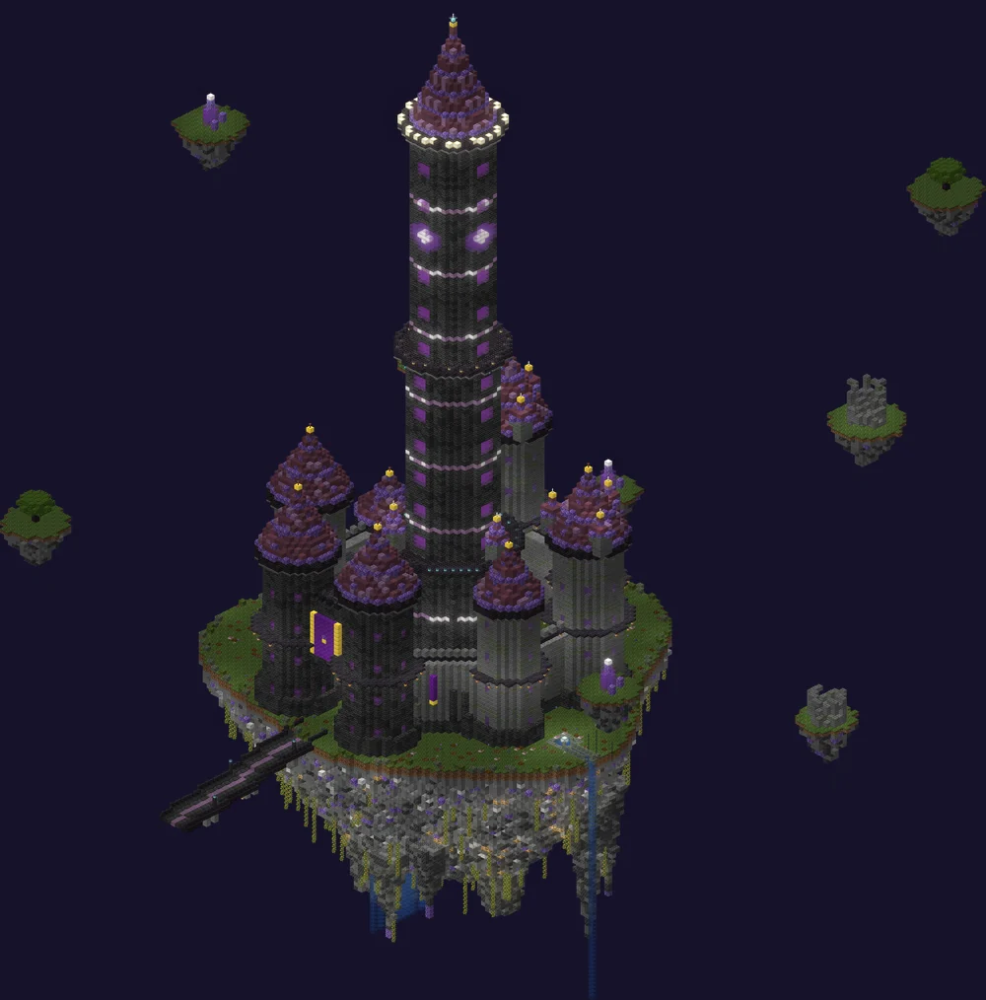

Статистика
Сезон в цифрах
- 14игроковиз 19 в вайтлисте. Пятеро так и не решились
- 193,5часа в игребольше 8 суток, если сложить всех вместе
- 6 937убитых мобов315 видов. Красная книга заметно похудела
- 492смертикто-то погибал каждые 24 минуты
- 1 284километракак от Москвы до Питера и обратно
- 68 025блоков добытоиз них 107 — алмазная руда
- 18 578крафтовверстаки просят отпуск
- 127 146прыжковпочти сутки непрерывных прыжков
- 7онлайн на пике13 сентября, 17:20. Самый людный день — тоже 13-е
- 1 100+сообщений в чатеи это не считая голосового
- 46запусков сервера8 из них — за 17 минут. Мы не будем об этом
Хроника
Как это было
- 11.09
Первое убийство сезона. aliveenjoyer начинает, как все начинают.
aiihosh1no выбирается из Pure Dark. Как туда можно попасть в первый же вечер — загадка.
- 12.09
Сервер открыт для всех. dsy находит первый алмаз и никому не говорит, где.
- 13.09
Самый безумный день сезона
ivycraft входит в Незер раньше всех.
dsy побеждает первого босса — Цветок пустоты.
aliveenjoyer открывает Полночь.
ivycraft убивает первого Хранителя и забирает его сердце.
ivycraft входит в Энд раньше всех…
…а через шесть минут dsy убивает Эндер-дракона. Прийти первым — ещё не значит успеть.
aiihosh1no получает первые элитры.
voV4ick_XXL спускается в The Deep Void, а к ночи побеждает Обсидилита.
- 14.09
Первая незеритовая броня — ivycraft. Через полчаса — призыв Иссушителя. Зачем — неясно.
Перчатка незера повержена. voV4ick_XXL побеждает Ночного лича.
Полный комплект брони Хранителя. Мода на скалк пошла от ivycraft.
- 15.09
Открылись сайт и заявки, построены вокзал «Оазис» и тоннель «Юг». ivycraft становится Героем деревни.
- 16.09
Открываются гонки на мётлах. Тотем бессмертия впервые спасает жизнь — угадайте кому.
- 17.09
День ivycraft
За один день ivycraft получает все пять «Сокрушителей» Arthropod Phobia, открывает портал в The Crawling и убивает МУЧИТЕЛЯ на 1024 HP.
Жертвоприношение у усадьбы: за дары выданы мётлы «Хитиновый Дракон» и «Погасшая Звезда».
Вечером — первые бои на Арене Затмения.
- 18.09
Втроём на «Бездне» против волн монстров. Итог — 2 волны из 12. Монстры довольны.
- 19.09
voV4ick_XXL ставит рекорд трассы «Сквозь Бездну» и воскрешает Эндер-дракона. Зачем — не спрашивайте.
Последний выход с сервера — anstlixx. Свет погашен. Сезон окончен.
Измерения
Открыто 8 миров из 21
- Обычный мирвсе 14
- Pure Darkaiihosh1no · 11.09
- Незерivycraft · 13.09 · 7 игроков
- Полночьaliveenjoyer · 13.09 · 6 игроков
- Эндivycraft · 13.09 · 7 игроков
- The Deep VoidvoV4ick_XXL · 13.09 · 6 игроков
- The Crawlingivycraft · 17.09 · 2 игрока
- Level 0кто-то был. Кто — тайна Backrooms
- Othersideждёт
- Жужжилищепчёлы скучают
- Everbrightждёт
- Everdawnждёт
- Undergardenключ под ковриком
- Webroomsи слава богу
- Afterdarkждёт
- Прошлоевернуться в него нельзя
- Подземелье Blood Magicждёт
- The Pitдно ещё не пробито
- Gasterждёт
- Baseplateждёт
- Boiler Roomтам жарко
Энд облетали всерьёз: один ivycraft налетал там 103 км на элитрах. Полночь исследована на 2,8 км², The Crawling — на 3,5 км².
Трофеи
Боссы сезона
Полоски здоровья настоящие. Ну, почти.
- Эндер-дракон×2
dsy — раньше всех, 13.09 · ivycraft
19.09 voV4ick_XXL воскрешает его обратно. Дракон не просил.
- МУЧИТЕЛЬ×1
ivycraft
Появился в небе без приглашения. Зря.
- Иссушитель×4
ivycraft ×4
Все четыре — призваны собственноручно.
- Хранитель×30
ivycraft 21 · voV4ick_XXL 8 · aliveenjoyer 1
Теперь Хранители ходят парами.
- Цветок пустоты×2
dsy · ivycraft
Первый босс сезона пал от dsy.
- Обсидилит×2
voV4ick_XXL · ivycraft
- Перчатка незера×6
ivycraft 4 · voV4ick_XXL 2
- Ночной лич×2
voV4ick_XXL · ivycraft
- Матерь лабиринта×1
voV4ick_XXL
- Верховный призыватель костей×2
ivycraft · aliveenjoyer
- Ferrous Wroughtnaut×2
ivycraft · dsy
- Frostmaw×1
ivycraft
- Апостол Катастрофы×42
ivycraft 23 · voV4ick_XXL 19
Катастрофа, которая случалась 42 раза.
- Смотритель улья×8
voV4ick_XXL 7 · ivycraft 1
Bosses of Mass Destruction — пройден 4 / 4. Цветок пустоты, Обсидилит, Перчатка и Лич. Мод можно удалять.
Пять «Сокрушителей» за один день. 17 сентября ivycraft прошёл Arthropod Phobia: тьмы, ада, Бездны, древности и космического.
Так и остались непобеждёнными
- Древний страж
- Заклинатель
- Алхимик
- Арахна
- Крушитель Старлит
- Дикая химера
- Умвути, Солнечная птица
- Тонгби, Скульптор
- Космический кристалл
- Ложная гидра
- Ткач Душ
- Мизантропический улейный разум
- Забвенный страж
- Призрак капитана Корнелии
- Лорд Тыквоголовый
Розыск закрыт
Легенды хоррора
В сборке водятся звёзды фильмов ужасов. Наши игроки отнеслись к ним без должного уважения.
- РазыскиваетсяФредди Крюгер×3поймал voV4ick_XXLПойман
- РазыскиваетсяДжейсон Вурхиз×1поймал anstlixxПойман
- РазыскиваетсяГоустфейс×2поймал anstlixxПойман
- РазыскиваетсяЧаки×1поймал anstlixxПойман
- РазыскиваетсяДжеймс Сандерленд×2anstlixx и dsyПойман
- РазыскиваетсяДжефф-убийца×2rt1na1n и dsyПойман
- РазыскиваетсяКсеноморф×1поймал dsyПойман
- РазыскиваетсяМумия×1поймал anstlixxПойман
- РазыскиваетсяКлоун×1поймал ramzBOSSПойман
Кто кого
Злодей сезона
Паук-мотылёк
24 убитых игрока
Больше него игроков убивали только сами игроки — 30 раз. Бывает.
Самые опасные
Самые убиваемые
- 15 раз убило молнией.
Кто-то явно злил небо. - 37 раз победила гравитация.
- 14 раз искупались в лаве.
Тёплая, говорят. - ramzBOSS — смерть каждые 10 минут.
Респаун узнаёт по шагам.
Зал славы
Номинации
MVP сезона
ivycraft
- 3 199 мобов 211 видов — больше всех
- 441 км — первое место по дороге, 103 из них на элитрах
- Дракон, 4 Иссушителя, 21 Хранитель, МУЧИТЕЛЬ
- Раньше всех — в Незере, Энде и The Crawling
- 193 достижения — рекорд сервера
- Чемпион Арены и рекордсмен двух трасс из трёх
Житель сервера
voV4ick_XXL
41 час, все 8 дней, 61 заход
Похоже, здесь уже прописка.
Шахтёр
voV4ick_XXL
25 713 блоков
Под спавном теперь эхо.
Драконоборец
dsy
первый босс и первый дракон
Остальные пришли на всё готовое.
Бесстрашие
ramzBOSS
93 смерти за 15 часов
Кровать не нужна: точка возрождения и так всегда под ногами.
Живучесть
QissMe
4 смерти за 6,5 часа
Подозрительно мало смертей для хоррор-сборки.
Крафтер
Yaivei
2 478 предметов за 7 часов
И 262 сообщения за два дня. Многозадачность.
Охотник на маньяков
anstlixx
Джейсон, Чаки, два Гоустфейса и мумия
Голливуд готовит иск.
Голос сервера
aliveenjoyer
389 сообщений в чате
Кто-то же должен был всех будить.
Рыбак сезона
вакансия открыта
0 рыб за 8 дней
Удочки лежат в сундуках нетронутыми.
Гонки на мётлах
Рекорды трасс
Гонка Бездны
12 колец · 6 гонщиков
- voV4ick_XXL76,132
- ivycraft75,021
- aliveenjoyer77,353
4. ramzBOSS 77,94 · 5. QissMe 87,80 · 6. Yaivei 132,99
Кошмар Бездны
22 кольца · 5 гонщиков
- voV4ick_XXL50,692
- ivycraft50,661
- aliveenjoyer55,753
Фотофиниш: 0,03 с. Это быстрее, чем моргнуть. voV4ick_XXL до сих пор моргает.
4. ramzBOSS 59,56 · 5. Yaivei 72,10
Сквозь Бездну
67 колец · небо, труба, пещера
- ivycraft151,842
- voV4ick_XXL140,961
- aliveenjoyer155,003
Реванш voV4ick_XXL: последний рекорд сезона, 19.09.
Арена Затмения
Бои
PvP, 17 сентября
Две дуэли по 2:1 и по победе в двух схватках «все против всех». voV4ick_XXL требует реванша.
Против монстров
Арена не побеждена
8 попыток, ни одна сложность не пройдена. Лучший результат — 2 волны из 12 на «Бездне» втроём: ivycraft, voV4ick_XXL и aliveenjoyer, 24 убийства. Монстры тоже подвели итоги сезона и довольны.
Все игроки
Таблица сезона
Нажми на заголовок столбца, чтобы отсортировать.
| Игрок | Часов | Дней | Смертей | Мобов | км | Добыто | Алмазы | Достижений |
|---|
Построено за 8 дней
Что мы сделали

Подземный оазис: озеро, ферма и 24 вида светящихся деревьев вверх ногами

Усадьба. Здесь проходило жертвоприношение

Вокзал «Оазис» и тоннель «Юг»

Небесная Цитадель — около 100 тысяч блоков над третьей трассой
- Русификация: 75 модов и квесты FTB — 15 тысяч строк перевода.
- Голосовой чат и починенный фриз при входе: было 9 секунд, стало 0.
- Сайт: заявки, скачивание сборки, «Жители» и живые таблицы гонок.
- Гонки на мётлах: три трассы, лобби, кубки, печати и «Корона Бездны».
- Арена Затмения: PvP и волны монстров, 4 яруса, 45 ловушек, 18 тайников с оружием.
- Предгенерация мира: больше 70 тысяч чанков, чтобы полёты не тормозили.
Титры
В ролях
В ролях
Хозяин сервераaliveenjoyer
Житель сервераvoV4ick_XXL
Гроза боссовivycraft
Драконоборецdsy
БесстрашиеramzBOSS
Охотник на маньяковanstlixx
Из тьмыaiihosh1no
КрафтерYaivei
ЖивучестьQissMe
Два дня — и легендаDodge
Ловец Джеффаrt1na1n
КамеоBlarian_dk · 0ttak · StevenXUX
Злодеи
Главный злодейПаук-мотылёк
Злодей второго планаСкорпиоид-кровожад
Гость с небаМУЧИТЕЛЬ
Каскадёры
Гравитация37 выходов
Молния15 выходов на бис
Лава14 выходов
Особая благодарность
Рыбаза то, что так и не попалась
Эндер-драконза то, что согласился на второй дубль
Продолжение следует
Сезон 2 — 1 октября. Новый мир, новые правила